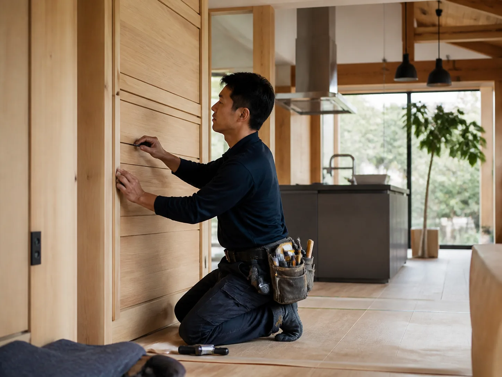

リフォーム / WORKS 03
築30年の実家をリノベーション

CONCEPT
既存の梁を活かした、二世帯リノベーション
ご両親から引き継いだ築30年の住まいを、二世帯で暮らせるようフルリフォーム。既存の太い梁をあえて見せる設計にし、新旧の素材が調和する空間に仕上げました。断熱・耐震性能も現行基準まで引き上げています。
| 所在地 | 架空県つむぎ市 |
|---|---|
| 家族構成 | 二世帯(親世帯+子世帯) |
| 延床面積 | 142.0㎡(約43坪) |
| 工事内容 | フルリフォーム(断熱・耐震補強含む) |
| 工期 | 約4ヶ月 |
| 使用素材 | 既存梁の再生 / 無垢フローリング張替 |
BEFORE / AFTER
リフォーム前後の比較
スライダーを動かすと、施工前後の変化をご覧いただけます。

Before
After
GALLERY
施工ギャラリー


RELATED